Wer sind wir?
STEM Asyut Deutsch Klub is a student-led initiative from Asyut STEM School, passionately dedicated to fostering German language proficiency. We specialize in supporting Grade 10 students through their curriculum while warmly welcoming all learners interested in the German language. Our club transforms language learning from a solitary task into a collaborative, community-driven journey.
Founded in 2024 by Moheb Mina and now led by Radwan Yahia for the 2025-2026 season, we provide a comprehensive, free extracurricular program. Our offerings include structured offline sessions, meticulously prepared study files and test banks, interactive online quizzes, stimulating competitions, and thorough final revisions. All our learning materials are carefully crafted from trusted resources such as Grammatik Aktiv, Netzwerk Neu, A Grammatik, and deutsch.com, and are reviewed by Asyut STEM's German language teacher to ensure quality and accuracy.
More than just tutors, we are peer mentors. We guide students on effective study strategies, host dedicated study guide sessions, and create an open environment where questions are encouraged and mistakes are seen as vital steps in the learning process. We are a united team of students, each contributing unique skills across various committees—from Academics and Content Writing to Graphic Design, IT, and Marketing—to build a holistic support system for our members.
Gemeinsam Deutsch lernen und gemeinsam wachsen!
Unsere Vision & Mission
Vision
We dream of a vibrant, supportive community where confident German speakers communicate effectively, appreciate cultural depth, and build lasting global connections. We envision a future where language serves as a bridge, not a barrier—empowering Asyut’s students to seize international opportunities, foster mutual understanding, and thrive both personally and academically in an interconnected world.
Mission
Our mission is to make German learning accessible, engaging, and enjoyable. We are committed to demystifying the language by providing a clear, structured, and supportive pathway. Through our well-organized lessons, interactive activities, and a repository of resources available on our dedicated drive, we transform the challenge of learning a new language into an exciting and rewarding journey of discovery.
We believe that the heart of effective learning lies in a supportive community. Therefore, we foster a collaborative environment centered on the student's needs, encouraging participation, recognizing achievements through quizzes and competitions, and ensuring every learner feels valued and capable.
Deutsch öffnet Türen – wir geben dir den Schlüssel.
Vision
We dream of a vibrant, supportive community where confident German speakers communicate effectively, appreciate cultural depth, and build lasting global connections. We envision a future where language serves as a bridge, not a barrier—empowering Asyut’s students to seize international opportunities, foster mutual understanding, and thrive both personally and academically in an interconnected world.
Mission
Our mission is to make German learning accessible, engaging, and enjoyable. We are committed to demystifying the language by providing a clear, structured, and supportive pathway. Through our well-organized lessons, interactive activities, and a repository of resources available on our dedicated drive, we transform the challenge of learning a new language into an exciting and rewarding journey of discovery.
We believe that the heart of effective learning lies in a supportive community. Therefore, we foster a collaborative environment centered on the student's needs, encouraging participation, recognizing achievements through quizzes and competitions, and ensuring every learner feels valued and capable.
Deutsch öffnet Türen – wir geben dir den Schlüssel.
Our Story & Impact
A timeline of our learning sessions, workshops, and club activities throughout the year
The Founding
August 17, 2024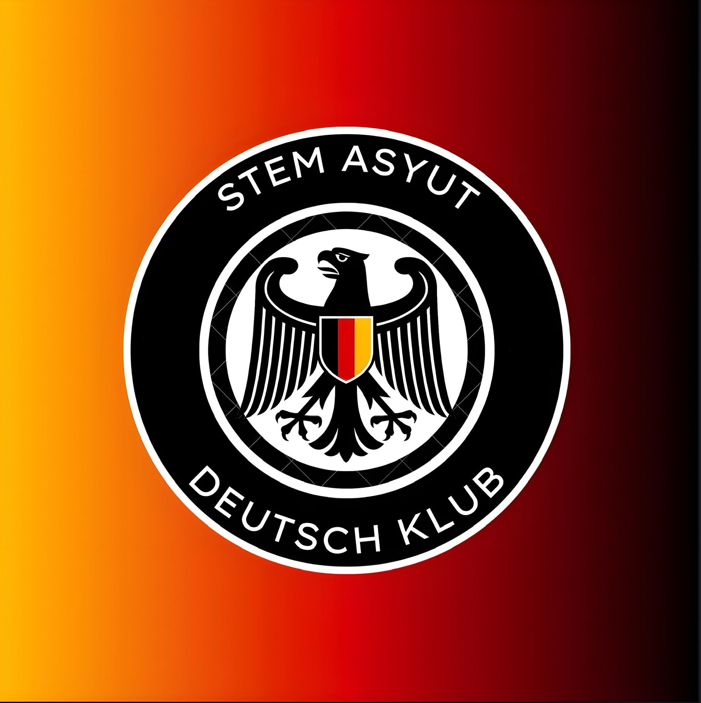
Founded within Asyut STEM School, our team was built upon a foundation laid by its initial members, each of whom earned the official A2 German language certification from the Goethe-Institut.
Alabakera German Competition
March 26, 2025
The club hosted its first major German language competition, "Alabakera," at Asyut STEM School. Student teams of four competed in engaging rounds designed to test core language skills, fostering both learning and teamwork in a lively atmosphere. Winners were awarded prizes in recognition of their excellence.
New Leadership Announcement
August 7, 2025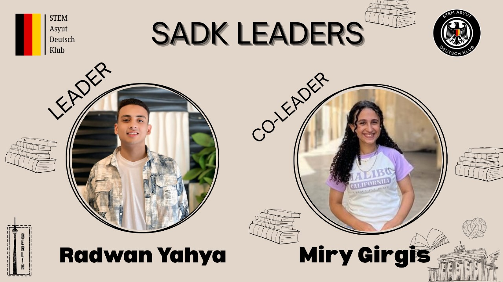
The STEM Asyut Deutsch Klub inaugurated its new leadership for the 2025-2026 season under Leader Radwan Yahya and Co-Leader Miry Girgis.
Their vision is to cultivate an inclusive environment where every learner can achieve a correct and profound mastery of the German language. While supporting academic success, the primary focus is on fostering genuine understanding and lasting confidence.
This season is dedicated to strengthening the foundation for meaningful and effective learning within our entire community.
Committee Recruitment Launch
August 10, 2025The club launched an open recruitment drive for its seven specialized committees: Academic, Content Writing, Marketing, Graphic Design & Video Editing, IT, HR, and Competition Organizing.
Promoted with the slogan “Deutsch macht Spaß!”, the campaign invited all interested STEM students to join a collaborative learning community. Applications were accepted until August 20, 2025, to build a robust team capable of executing the club's ambitious vision for the new season.
First Grade 10 Session
October 13, 2025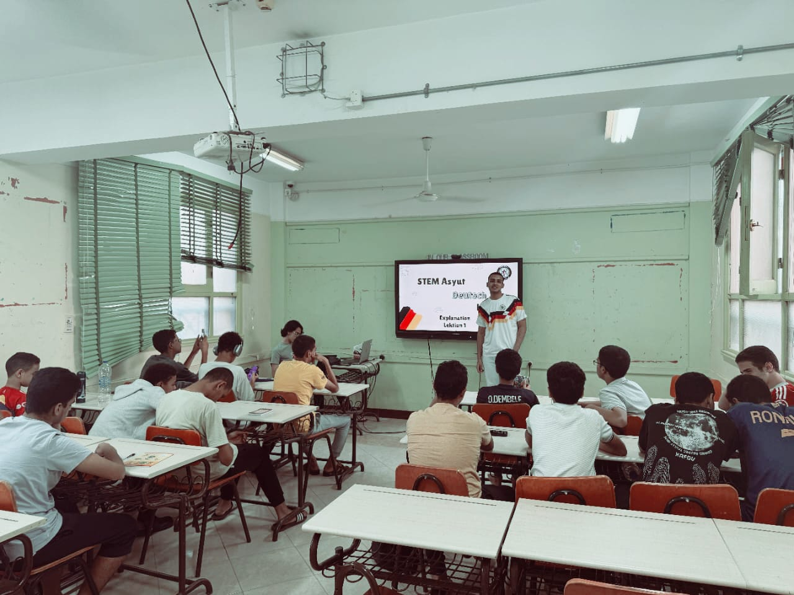
The club successfully launched its German language program for Grade 10 students on October 13, 2025. The inaugural session introduced effective study methods, key resources, and the structure of the curriculum, beginning with Lektion 1 and part of Lektion 2. Students engaged with practice questions and were familiarized with common exam formats.
The interactive class featured lively activities, and the most participating students were recognized with small rewards. The session set an energetic and supportive tone for the learning journey ahead in the 2025-2026 season.
Focused Midterm Preparation Session
November 03, 2025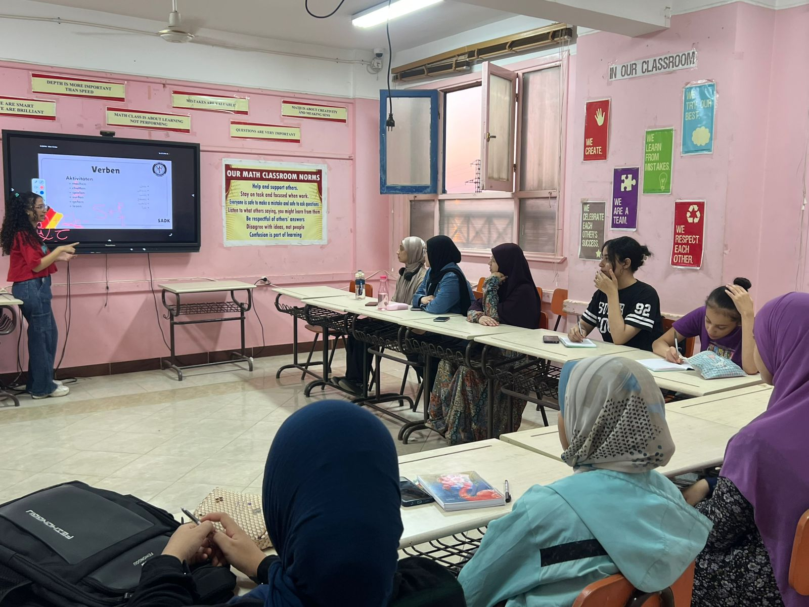
Held on November 3, 2025, the club's second academic session was strategically designed as dedicated midterm exam preparation. The session provided a thorough review of Lektion 1 and the first half of Lektion 2, ensuring a solid grasp of foundational material.
Instruction focused on clarifying key concepts and practicing with targeted questions from the club's curated test bank. This approach gave students a clear understanding of the exam structure and question formats, equipping them with the knowledge and confidence needed to excel in their upcoming midterm assessments.
Third Session: Completing the Grade 10 Curriculum
December 10, 2025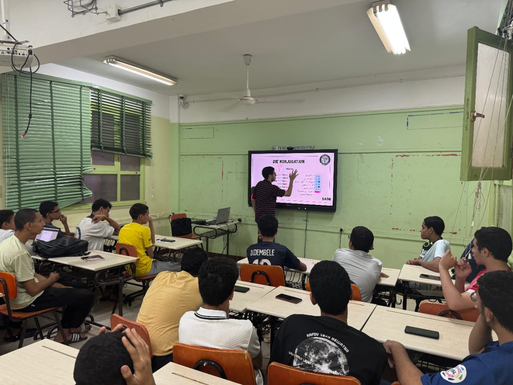
On December 10, 2025, the STEM Asyut Deutsch Klub held its third major academic session, dedicated to completing the full Grade 10 German syllabus. The session covered the remainder of Lektion 2 and all of Lektion 3, accompanied by guided problem-solving to reinforce comprehension.
This meeting marked an important milestone: the structured coverage of all required curriculum content. With the syllabus now complete, students were fully prepared for the dedicated final revision session that would follow, ensuring a smooth transition from learning to exam preparation.
End-of-Term Review Session
December 26, 2025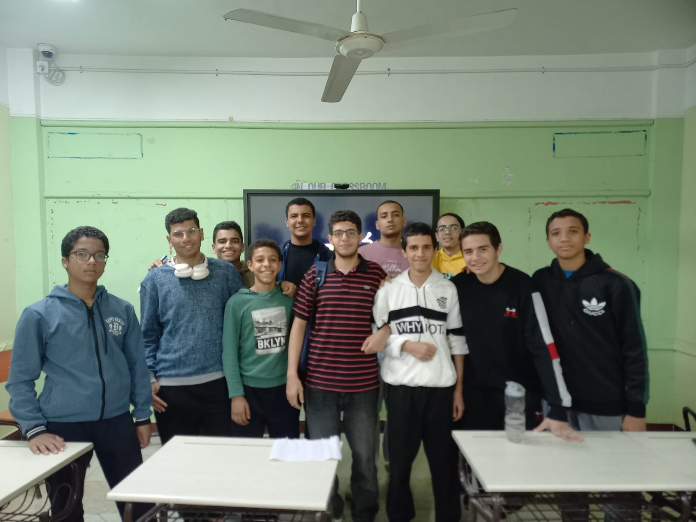
On December 26, 2025, the STEM Asyut Deutsch Klub conducted its culminating first-term session: a comprehensive final revision for Grade 10 students. This special class provided a complete review of the entire curriculum, with particular emphasis on mastering practical, everyday situations (Alltagssituationen).
Participants received a specially prepared situational practice file and engaged in solving a full past exam. The session effectively consolidated the term's learning objectives, ensuring students concluded the first term with confidence and thorough preparation for their upcoming assessments.
Comprehensive Study Drive Released
December 28, 2025
On December 28, 2025, the club released its official Study Drive—a complete, curated repository of all essential German learning materials. Designed as the definitive resource for independent study, it contains the full suite of structured curriculum guides, practical situation files, past exams, test banks, and key textbooks required for both Grade 10 and Grade 11 students.
This organized collection ensures every learner has access to reliable, high-quality materials in one place, supporting focused and effective self-paced study throughout the academic year.
Term-Wide Online Examination
January 05, 2026
The club administered a comprehensive online exam on January 5, 2026, testing the complete Grade 10 term curriculum. Designed to evaluate core skills under realistic conditions, the exam was taken by 23 students.
Participants demonstrated strong understanding, achieving an impressive average score of 26.3/30 with an average completion time of 27.44 minutes. Top performers were recognized with official certificates and prizes, highlighting the success of the term's learning program.
Member Recruitment Drive
February 6, 2026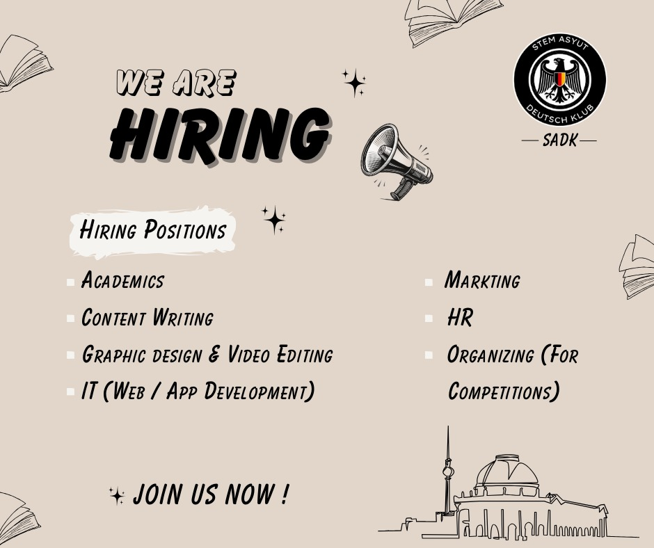
On February 6, 2026, the STEM Asyut Deutsch Klub opened applications for new members to join its seven specialized committees: Academic, Content Writing, Marketing, Graphic Design & Video Editing, IT, Human Resources, and Organizing.
Promoted with the slogan "Deutsch macht Spaß!", the drive invited all STEM students to become part of a collaborative community exploring German language and culture through activities, games, and teamwork. Applications were accepted until February 15, 2026, via the club's online form.
Second Term Launch and Bridging Session
February 23, 2026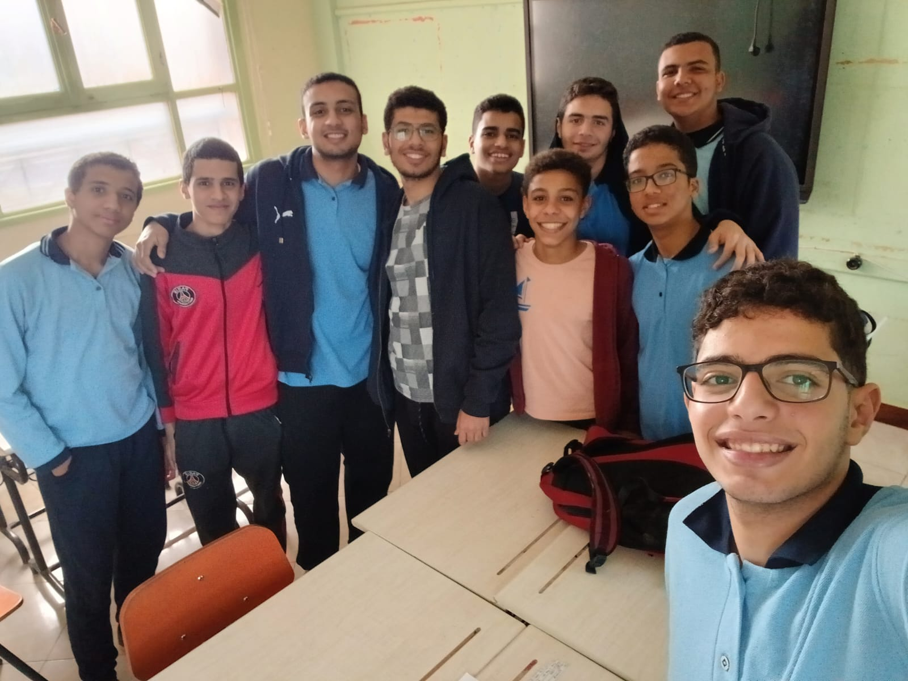
On February 23, 2026, the club held its first offline second-term session for Grade 10. The meeting bridged first-term gaps through a focused grammar review and a complete explanation of Lektion 4, supported by targeted practice from the club's test bank.
Conducted in an interactive, prize-filled atmosphere, the session also provided study tips, effective learning techniques, and recommended online resources, equipping students with correct methodology and renewed confidence.
Second-Term Resource Series and Final Revision
March 13 – April 24, 2026From March 13 to April 24, 2026, the club released a series of comprehensive study resources covering the remainder of the second term. Each Lektion was accompanied by a detailed study guide offering effective learning strategies and curated video links, along with solution and explanation files.
The release concluded with a final revision file consolidating the full second-term curriculum, providing students with structured, high-quality materials for independent preparation and exam readiness.
Official Website Launch
May 27, 2026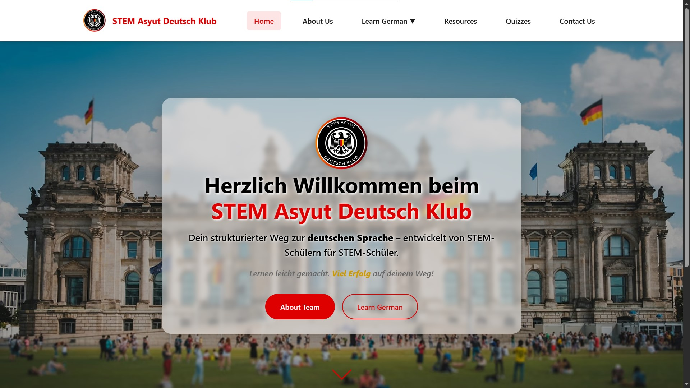
On May 26, 2026, the STEM Asyut Deutsch Klub officially launched its dedicated website, providing a centralized platform for German language learning tailored to STEM students.
Designed especially for Grade 10 learners, the website offers streamlined access to structured study materials, interactive quizzes, session guides, and club updates, reinforcing the team's commitment to accessible, peer-led, and community-driven German education.
Our Leadership & Committees For the 2025-2026 Season
Meet the dedicated teams working together to create an exceptional German learning experience
Club Leadership
Leading the vision and strategy of Deutsch Klub, ensuring smooth operations and continuous improvement.
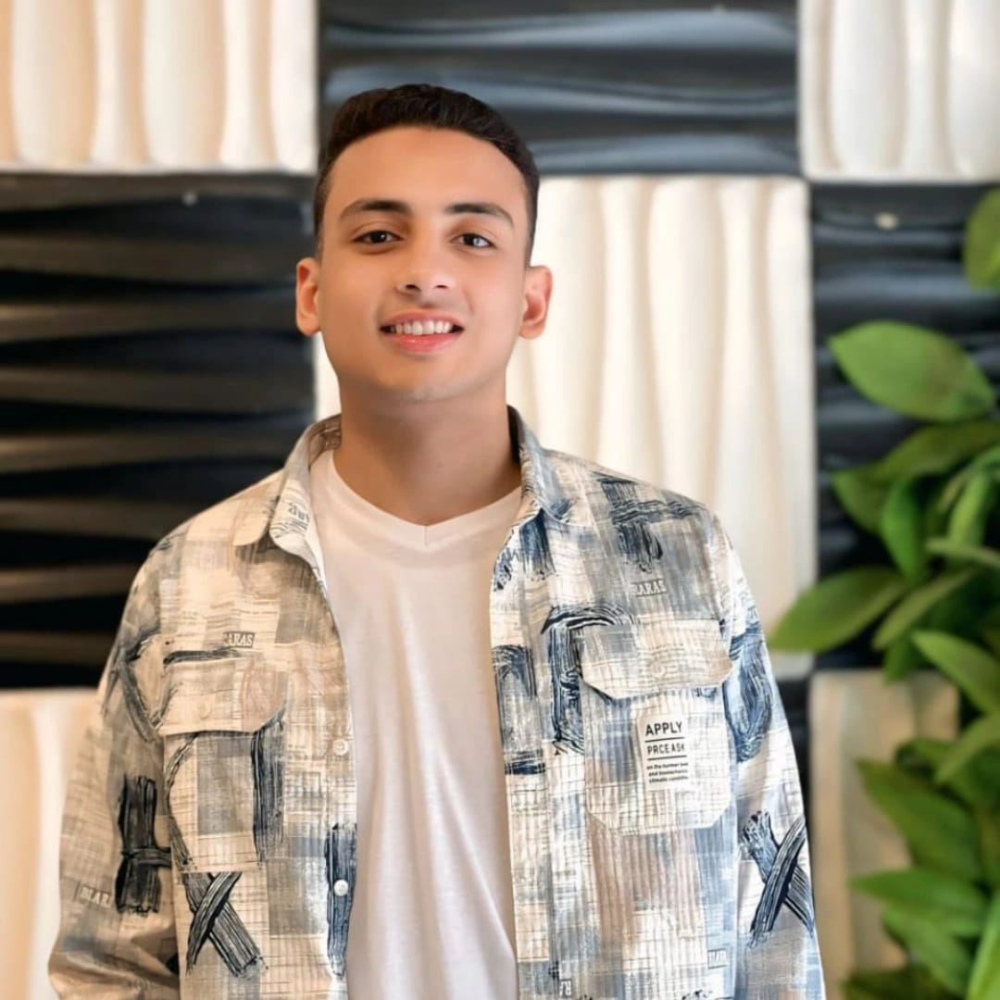
Radwan Yahya
Leader
Oversees all club activities and strategic direction.

Miry Girgis
Co-Leader
Supports operations and committee coordination.
Academic Committee
Designs curriculum, prepares materials, and leads study sessions to ensure effective learning.
Committee Heads
Sama Samy
Head

Adam Mohamed
Vice Head
Committee Members
- Moaaz Ahmed
- Joy Saleh
- Maria Asaad
- Marly Alber
Marketing Committee
Manages social media, creates content, and documents club activities through photos and videos.
Committee Heads
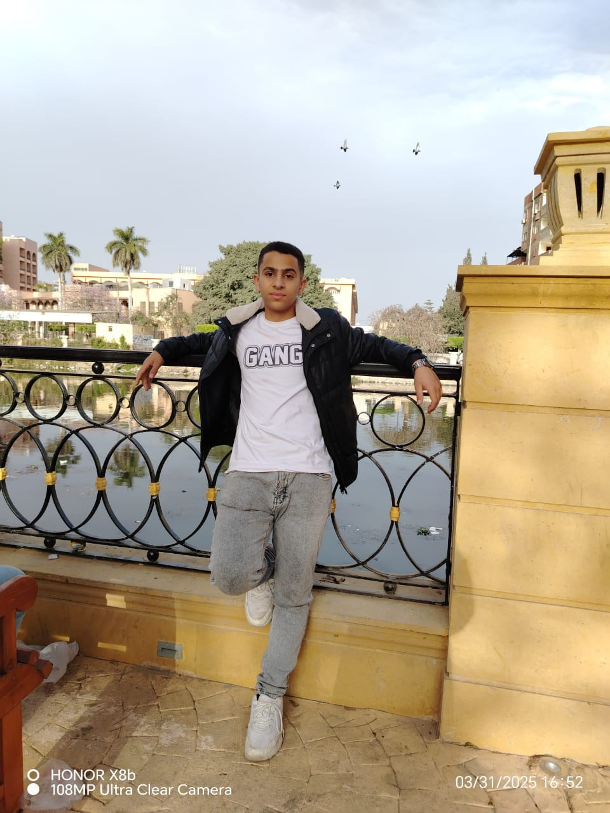
Mohamed Shawky
Head
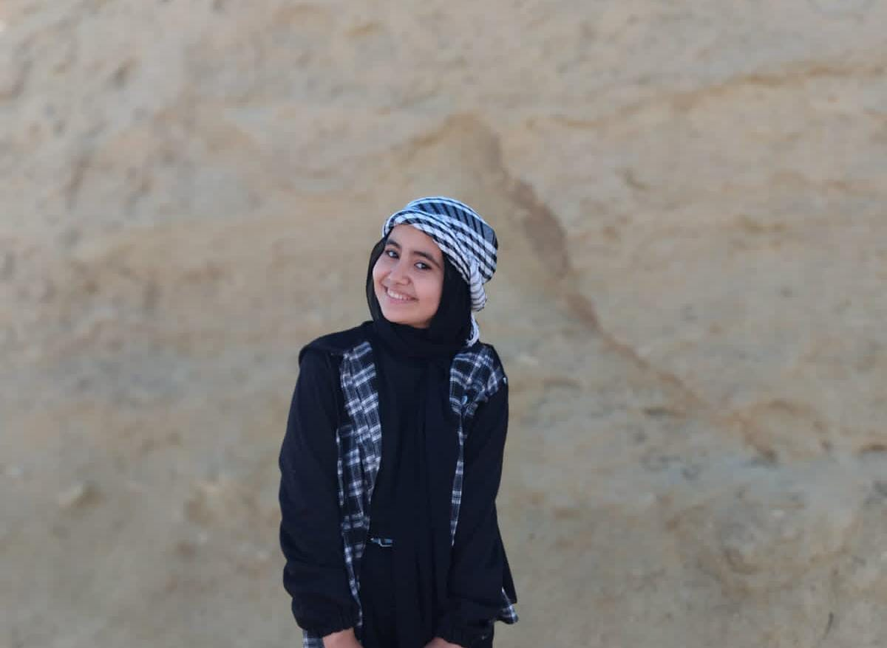
Habiba Ahmed
Vice Head
Committee Members
- Ahmed Abdelwahab
Competition Committee
Organizes workshops, competitions, and cultural events to make learning interactive and fun.
Committee Heads

Yazeed Ahmed
Head

Adham Sherif
Vice Head
Committee Members
- Abdelrahman Osama
Content Writing Committee
Responsible for crafting creative and strategic written content for all marketing and communication materials.
Committee Heads

Mohamed Khaled
Head
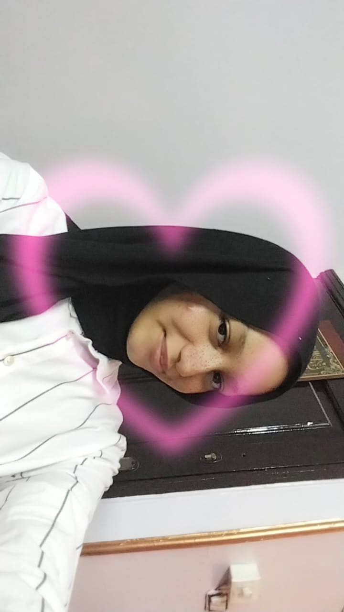
Salsabil Mohamed
Vice Head
Committee Members
- Amr Mousa
Human Resources Committee
Focuses on enhancing the work environment, employee experience, and organizing team-building and development activities.
Committee Heads

Shenouda Atef
Head

Alaa Ahmed
Vice Head
Committee Members
- Abdelrahman Ebrahim (Coordinator)
- Amany Mohamed
- Marina Shenouda
IT Programmers Committee
Specializes in developing software solutions, applications, and systems to support the organization’s technical and operational goals.
Committee Heads
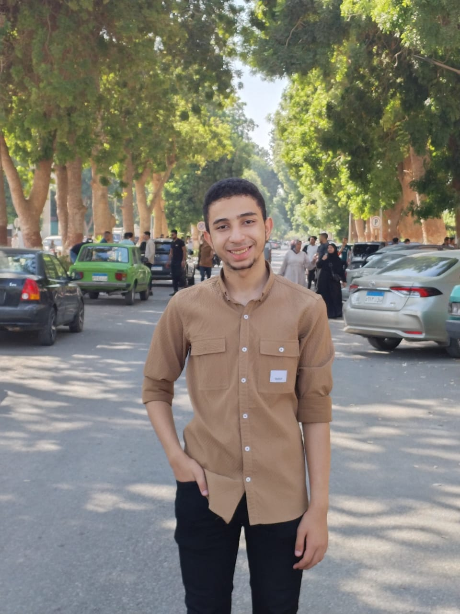
Ahmed Eladawy
Head
Committee Members
Graphic Design Committee
Handles visual identity design and advertising materials to strengthen the organization’s visual presence and brand image.
Committee Heads

Renad Samed
Head